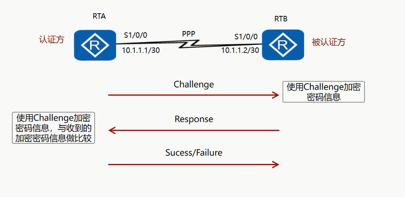
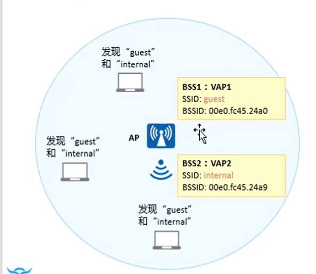

网络工程 Datacom-HCIA
先放张协议地图
网工说白了，学的就是这些东西
网络模型
目前普遍使用的是由阿帕网演化的TCP/IP四层模型，用于学习的是ISO组织推出的OSI七层模型
| OSI | TCP/IP | 作用 |
|---|---|---|
| 应用层 | 就是应用 | |
| 表示层 | 应用层 | 对应用层产生的数据进行编译或者解码 |
| 会话层 | 建立连接-维持连接-断开连接 | |
| 传输层 | 传输层/运输层 | 确定端口号=port ；实现数据具体的传输方式 |
| 网络层 | 网际层 | ip寻址 |
| 数据链路层 | 网络接口层 | 定位mac地址，数据校验 |
| 物理层 | 连接设备，发送电信号 |
数据的传输形式
第一代：电路交换：共同维护逻辑的一条链路-仅仅供两端设备之间访问，如果链路未释放，其他终端仍然无法使用链路
第二代：报文交换：在传输数据外面，添加发送者的信息，以实现报文的精确转发。
第三代：分组转发：将每个数据的大小进行定义，按照相同大小数据进行转发
现在使用的是分组转发技术
物理层
物理层的单位是：比特 —— byte
网线规格
从最初到现在，一共出现过9种网线规格，现在仍在使用的网线从五类网线开始（包括五类）
1、一类：早期的电话线缆–2芯–56Kb
2、二类：可以传输语音-数据接收4芯-4兆
3、三类：4芯—10兆
4、四类：8芯—16兆
5、五类：增加了绝缘层—100M
6、超五类：增加了屏蔽层—250M–1000M
7、六类：中间加入塑料十字架–1G
8、超六类：增加屏蔽层–1G
9、七类：用于万兆网络—都是屏蔽双绞线—10G
网络制作规格
网线制作两种规格：
568A:白绿 绿 白橙 蓝 白蓝 橙 白棕 棕
568B：白橙 橙 白绿 蓝 白蓝 绿 白棕 棕
现在常用568B规格
光纤
| 单模光纤 | 多模光纤 |
|---|---|
| 玻璃丝-细 | 玻璃丝-粗 |
| 光信号损耗小 | 信号损耗大 |
| 传输距离远 | 传输距离近 |
| 成本开销高（需要激光信号发射） | 成本开销低 |
| 适合数据中心 | 适合企业网 |
解决冲突域
在物理层发送数据时，如果有两个使用同一网线的设备同时发送数据，就会产生冲突
这个范围叫做冲突域
解决冲突域使用CMSS/CD协议
CSMA/CD：载波侦听多路访问/冲突检测
特点：
- 1、先听后发
- 2、边发边听
- 3、冲突停发
- 4、停发后随机延时 2ms-216ms 再发（根据带宽进行计算）
数据链路层
数据链路层的单位是：帧
以太网数据帧的结构
以太网数据帧有两种结构，分别是IEEE 802.3,简称802.3和Ethernet 2,简称E2
早期还有Novell(诺威尔软件公司)的IPX/SPX和IBM(蓝色巨人)的SNA,现在均已经淘汰
E 2
报头长度18B
E2的数据报文结构如上，由 目的MAC[D.MAC] ，源MAC[S.MAC]，类型[Type]和帧尾的FCS(帧校验序列)组成
TYPE: 类型 作用是标识上层(网络层)的协议
- IPV4 : 0x0800
- ARP：0x0806
FCS： 帧校验序列 通过 CRC[循环冗余校验算法] 判断数据有没有在传输过程种发生错误
IEEE 802.3
报头长度：26B
802.3结构如上所示，802.3将E2中的Type改为Length、LLC、SNAP三个字段
Length: 表示该帧携带了多长的数据，值为数据长度
LLC: 逻辑链路控制
- D.SAP： 目标服务（接收方网络层应该使用什么协议处理）
- S.SAP： 发送者使用的服务（发送方网络层使用的协议）
- control：控制器，迄今为止没有开发出来
SNAP：子网络接入服务点，用于标识私有路由技术（协议）
- org code：标识私有路由协议研发者
- Type/PID：标识这个私有路由协议的名称
总结：E2承载开放协议，802.3既可以承载开放协议，也可以承载私有协议。
上层协议对链路层帧结构的判断方法
Length/Type > 1536(0x0600) E2
Lenght/Type < 1500(0x05DC) 802.3
由于E2结构中Type字段表示上层所用的协议类型，所以值一定大于数据包最大长度，即大于1536
而802.3结构中Length字段表示携带数据的长度，所以值一定小于数据包最大长度，即小于1500
Length和Tpye都在数据帧第12B到14B，所以上层只需要检查第12B到14B的值，就可以知道数据链路层使用的帧结构
数据泛洪传输
在二层网络中(交换机网络)，数据均以在广播域中泛洪的方式传输
比如有设备PC1、PC2、PC3、PC4在同一广播域
当PC1发送数据给PC2时，并不是仅仅发送给PC2，而是同时发送给PC2、PC3、PC4，这就是数据泛洪
当设备接收到一个数据包，会先判断是不是发送给自己的，是则接收，否则丢弃
单播
单播是数据帧发送时，目的MAC为目标设备MAC，源MAC为发送者自己
所以有且只有一个发送者和一个接收者，是点到点
- 单播报文，目的MAC第8个bit(1B(字节)是8个bit)是0【看MAC地址第二个数字的二进制最后一位】
其他设备收到数据包，判断目的MAC是不是自己，是则接收，否则丢弃
组播
组播是发送时，源MAC是自己，目的MAC为使用IGMP协议生成的，可以代表组内MAC地址的虚拟MAC
所以有一个发送者和多个接收者，是点到多点
- 组播报文，目的MAC第8个bit是1
其他设备收到数据包，判断自己的MAC在不在组内，在则接收，否则丢弃
广播
广播报文源MAC是自己，目的MAC全为1：FF-FF-FF-FF-FF-FF
在广播域内的所有设备都直接接收广播报文
MAC地址的分配
MAC地址6B,24字节，前12字节由IEEE通过OUI向厂商发放购买
后12字节由厂商购买后自己决定
由此让每个设备的MAC唯一
网络层
IP报文结构
第一行主要对报头进行识别：
1、Version: 版本，标识使用IPV4或者IPV6
IPV4 = 0100
IPV6 = 0110
2、Header Length: 报头长度。表示IP报文的报头有多长，（20B-60B）
报头长度计算： 行数 * 4 = 报头长度（一行32bit,4字节） 如：5 * 4 = 20B ; 15 * 4 = 60B3、DS Field: 区分服务，结合QOS使用，属于IE的知识点
4、Total Length: IP报文总长度(报头+数据)
第二行主要对IP报文分片：
计算机的传输能力是有限的，所以规定每次发送的数据都不能超过最大传输单元，否则就要分成几段（片）发送，这就是IP报文的分片
MTU：最大传输单元，单位为字节
1、identification：标识报文id
分片是，同一个报文分出的所以数据包，这个值都相同
主要用于区分不同报文分片产生的数据包
2、Flags：标识数据是否接收完毕
当Flags为0时，表示这个数据包是某个报文分出的最后一个包，
此时网络层默认该报文全部接收完毕，开始重组分片
3、Fragment Offset：分片偏移。表示分片原本的位置
一个报文的最后一个分片会携带8B的ICMP协议数据
第三行主要标识控制信息：
1、Time to Live：老化时间/生存时间，简称TTL
每个数据包发送时，TTL均为255，每经过一台设备就减一，
当减到1时认为网络不可达，丢弃该数据包
2、portocol：协议，标识上层(传输层)使用的协议
ICMP协议portocol=1；TCP协议值为6；UDP协议值为17；OSPF协议值为89
3、Header Checksum：头部校验和，检查IP数据包报头有没有出错
第四行源IP地址，第五行目的IP地址，各占32bit
最后一行是扩展行，留待之后用，最少0B,最多40B
IP地址与IP地址分类
ip地址是以点分十进制表示的四组二进制数字
192.168.1.1 ==> 1100 0000.1010 1000.0000 0001.0000 0001
192 => 1100 0000
168 => 1010 1000
1 => 0000 0001
所以ip地址最小是0.0.0.0最大是255.255.255.255 (二进制：1111 1111 = 十进制：255)
IP地址分类
IP地址分为ABCDE五类，在网络中用到的只有ABC三类
A类地址必须是以0开头
0000 0000 . 0000 0000 . 0000 0000 . 0000 0000 最小值：0.0.0.0
0111 1111 . 1111 1111 . 1111 1111 . 1111 1111 最大值：127.255.255.255
B类地址必须以10开头
1000 0000 . 0000 0000 . 0000 0000 . 0000 0000 最小值：128.0.0.0
1011 1111 . 1111 1111 . 1111 1111 . 1111 1111 最大值: 191.255.255.255
C类地址必须以110开头
1100 0000 . 0000 0000 . 0000 0000 . 0000 0000 最小值：192.0.0.0
1101 1111 . 1111 1111 . 1111 1111 . 1111 1111 最大值：223.255.255.255
ABC三类地址是设备上可以配置的单播地址
D类地址必须以1110开头
1110 0000 . 0000 0000 . 0000 0000 . 0000 0000 最小值：224.0.0.0
1110 1111 . 1111 1111 . 1111 1111 . 1111 1111 最大值：239.255.255.255
D类地址用于组播地址，不作为单播地址使用
E类地址必须以1111开头
1111 0000 . 0000 0000 . 0000 0000 . 0000 0000 最小值：240.0.0.0
1111 1111 . 1111 1111 . 1111 1111 . 1111 1111 最大值：255.255.255.255
E类地址用于科研【科研阶段技术不成熟，使用ABC类会对正常网络产生影响，所以科研技术全部使用E类地址】
DE两类地址均不能作为正常IP地址使用
特殊IP地址
在分为五类的基础上，还有一些特殊地址，这些地址同样不能作为公网通信的IP使用
本地环回地址：
127.0.0.0 —— 127.255.255.255 这个网段（简称127网段）是环回地址
用于检查设备自己的TCP/IP协议栈有没有出现问题
默认地址/缺省地址/所有地址：
这三者都是在说0.0.0.0 这个地址，它可以代表所有IPV4地址
私网地址
IP地址最多只能分配47亿公网IP,不够全球使用，所以每个公网IP下都可以设置大量私网地址用于分配
公网地址需要购买才可以使用，私网地址可以随便设置
我们随身携带的设备一般都是私网地址，并非公网地址
A类IP私网网段：10.0.0.0 —— 10.255.255.255 【简称10网段】
B类IP私网网段：172.16.0.0 —— 172.31.255.255
C类IP私网网段：192.168.0.0 —— 192.168.255.255 【简称192.168网段】
B类私网地址不是一整个172网段属于历史遗留问题，RFC就是这样规定的
子网掩码与子网划分(VLSM)
子网掩码与IP地址对应
A类地址的默认子网掩码为255.0.0.0 即/8
B类地址的默认子网掩码为255.255.0.0 即 /16
C类地址的默认子网掩码为255.255.255.0 即 /24
一个完整的IP地址分网络位和主机位，子网掩码用于标识网络位
192.168.1.1/24
IP： 1100 0000 . 1010 1000 . 0000 0001 . 0000 0001
掩码：1111 1111 . 1111 1111 . 1111 1111 . 0000 0000
二进制中掩码对应为1的叫做网络位，对应为0的叫做主机位
| 地址 | 网络位 | 主机位 | 地址范围 | 主机数量 |
|---|---|---|---|---|
| A | /8=255.0.0.0 | 24 | 1-126 | 16,777,216-2 |
| B | /16=255.255.0.0 | 16 | 128-191 | 65,536-2 |
| C | /24=255.255.255.0 | 8 | 192-223 | 256-2 |
网络位相同的IP地址属于同一网段
主机位特殊的IP地址
1、主机位全0，表示一个网段的所有地址，一般用来指代网段
2、主机位全1，是广播地址，由主机位全1的IP发送的数据，同网段内所有IP都可以收到
所以主机位全0和全1的地址不能用于设备单播
子网划分（VLSM）
VLSM：可变长子网掩码
顾名思义，子网掩码并非默认不变，而是可以增加或者减少
增减子网掩码位数后网段和主机数目会产生变化，顾称子网划分
如上图，C类网络掩码+1，网络位从原来的24到25，主机位从8到7
网络位变成了x.x.x.0和x.x.x.1
111 1111 = 127,所以这个网段被重新划分为两个子网，每个子网有0-127，共128-2个可用地址(主机位全0或全1不可用于单播)
.0网段和.1网段网络位不同，是独立的网段，这就是子网划分
当掩码为32位时，只有网络位没有主机位，此时唯一标识一个主机 192.168.1.1/32
注：增加掩码是划分子网，减少掩码是划分超网
ICMP协议实现ping
ICMP报文在正常的数据通信中，出现在IP报文的最后一个分片的IP首部之后，是IP层协议，被网络层和传输层使用
ICMP报文的种类有两种，即ICMP差错报告报文和ICMP询问报文。
报文格式：
在ICMP协议中，8位类型Type和8位代码Code，决定ICMP报文类型
在ping测试中，发送方发送type/code= 8/0 (echo request) 回应请求报文
接收方收到后发送type/code=0/0 （echo reply） 回应应答报文
ICMP报文详情不是IA知识，放在之后解释，具体参考ICMP报文详解
传输层
传输层主要负责区分设备上的不同应用，主要有TCP协议和UDP协议
端口
网络层确定大体位置，链路层确定设备，但是一个设备中有许多的应用程序。
传输层通过划分端口，确定要将一个数据交给哪个应用。每个端口号只对应一个服务，一个服务可以占用多个端口
端口号总数：0-65535=65536
知名端口 0-1023 = 1024个
几乎每个设备都会用到的服务，会划分给知名端口
IA阶段需要了解的有：
TCP协议下的：
- HTTP协议 80 ；web服务
- HTTPS协议 443 ； 加密的web服务
- Tenlet协议 21 ； 远程连接
- SSH协议 22 ； 加密远程连接
- FTP协议 21/20 ； 文件传输
UDP协议下的：
- DNS协议 53 ； 域名解析
- DHCP协议 67/68 ；动态IP地址分配
使用到端口的协议都是应用层协议
高随机端口 1024-65535
类似qq，微信这种，常用但并非每个设备都必备的应用，在发送数据时，就会请求一个空闲高位的随机端口
情景举例：
A向B通过qq发送一条消息
A的qq端申请了一个空闲高位端口，以这个端口为源端口，发送数据给B的qq端
【在开发层面，每个应用启动时会监听一到多个固定端口，这个固定端口就是该应用的目的端口
，在关闭应用时，会释放监听的端口】
如果有两个应用目的端口一致，就会发生冲突，应用无法启动，直到一个应用退出
B的目的端口收到A传来的数据后，B的qq端申请一个高位随机端口，
以这个高位端口为源端口，A设备的高位端口为目的端口，发送确认报文并建立通信
通信结束后，A、B设备申请的高位端口被释放
TCP协议报文
TCP：传输控制协议，面向连接的协议；可靠传输；基于已经建立好的连接；主要用于传输大文件
传输的过程可概况为三次握手和四次挥手
三次握手
第一步：PC1发送SYN，表示我想跟你建立连接
第二步：PC2收到报文后，回复ACK进行确认同时发送SYN表示我也想跟你建立连接
第三步：PC1收到报文后，回复ACK进行确认
四次挥手
第一步：PC1数据发送完毕，发送FIN，表示我想跟你断开连接
第二步：PC2收到报文后，回复ACK进行确认
第三步：PC2数据接收完毕，发送FIN，表示我想跟你断开连接
第四步：PC1收到报文后，回复ACK进行确认
TCP协议报文字段解释
第一行是源端口和目的端口，源端口随机获取，目的端口是服务器或者另一个客户端的固定端口
第二、三行字段保证可靠性传输
Sequence number：序列号
TCP将每个字节的数据都进行了编号，序列号字段的值是该报文第一个字节的编号
Acknowledge number：确认号
当接受方收到报文时，接受方会发送包含确认号的确认报文
如发送方发送序列号为1，长度100的报文，那么接受方的确认报文就是1+100=101，表示101之前的数据收到了，下一个报文应该从101开始
确认号 = 序列号 + 数据长度
第四行字段负责建立连接
Header Length：报文首部长度
Resv. ： 保留位，目前无意义
六个标识位
URG：紧急指针是否有效
ACK：确认号是否有效
PSH：提示接收端应用程序立刻从缓冲区读走
RST：要求对方重新建立连接，携带RST的标识的报文称为复位报文段
SYN：请求建立连接，携带SYN标识的报文称为同步报文段
FIN：结束标识，告诉对端本端关闭连接。Windows： 窗口大小，无需等待确认应答而可以继续发送数据的最大值
第五行Checksum是校验和
UP是紧急指针：标识紧急数据，发送紧急数据不需要建立连接
UDP报文
UDP：用户数据包协议，面向无连接的协议；不可靠的传输；面向实时性的业务以及对时间要求更高的流量
比如直播
UDP协议特点
UDP协议不需要建立连接，知道对端的 IP 和端口号就直接进行传输
没有任何安全机制，发送端发送数据报以后，如果因为网络故障该段无法发到对方， UDP 协议层也不会给应用层返回任何错误信息
应用层交给 UDP 多长的报文， UDP 原样发送，既不会拆分，也不会合并
UDP 协议首部中有一个 16 位的最大长度。也就是说一个 UDP 能传输的数据最大长度是 64K
如果传输数据大于64K，则需要在应用层自己写代码实现类似TCP的可靠传输机制
参考文章：40 张图带你搞懂 TCP 和 UDP
DNS域名解析协议
应用层协议，将域名解析成IP地址
各个城市维护自己的DNS服务器，全球也有总DNS服务器
当访问一个域名时，会逐级访问DNS服务器，查询域名对应的IP地址，查询之后与该IP通信
DNS协议同时基于UDP和TCP
- 域名解析时使用UDP53号端口
- DNS服务器之间的区域传输时使用TCP53号端口
NTP网络时间协议
ntp协议用于在一系列分布式时间服务器与客户端之间同步时钟，基于UDP实现，使用UDP 123端口
ntp协议架设在专门的ntp服务器上，可以在内网自己搭建，也可以直接使用公网的ntp服务器
公网ntp服务器地址：time.windows.com
ARP地址解析协议
位于网络层和数据链路层之间的协议
在已知IP地址的情况下，去请求MAC地址
ARP报文格式如下：
硬件类型（2byte）：指明了发送方想知道的硬件接口类型，以太网的值为1；
协议类型（2byte）：指明了发送方提供的高层协议类型，IP为 0800（16进制），表示 IPv4；
硬件地址[MAC]长度（1byte）和协议地址长度（1byte）：指明了硬件地址和高层协议地址的长度，单位为字节，硬件地址长度为 6，协议地址长度为 4；
发送方MAC地址（6byte）：源MAC；
发送方 IP 地址（6byte）：源IP 地址；
目标MAC地址（6byte）：目的MAC地址；
目标 IP 地址（6byte）：目的IP 地址。
在不知道目的MAC时，ARP协议设置目的MAC为全0。然后发送全F广播报文
Esnp模拟器有Bug，会显示目的MAC全F
ARP解析步骤：
第一步：会检测对端的IP地址是否和自身在同一网段内
不相同：丢弃；相同：进行下一步
第二步：查看收件人是否为自己（拆开E2看ARP的目的地址）
不是自己：丢弃；是自己：进行下一步
第三步：收到对端的ARP回复时，进行数据的封装
ARP表：
用来临时存储IP地址与MAC地址的对应关系，每个设备都有
ARP表中的数据存在20分钟的老化时间
华为设备中规定：ARP老化时间
1、到达1/2=10分钟（进行ARP单播探测）（确认链路存在则刷新计时器）
2、到达3/4=15分钟（ARP单播探测）（确认链路存在刷新计时器）
3、到达20分钟（ARP广播探测）（确认链路存在刷新计时器）
20分钟时的ARP广播探测如果仍然没有找到目的MAC,则删除ARP表对应条目
文件传输协议
早期WEB还未出现时，最通用的文件传输方式就是FTP(文件传输协议)以及TFTP(简单文件传输协议)
现在仍在使用，在网络工程中主要用于升级设备
升级设备系统的方式：
1、在可连通外网的情况下，直接下载在线升级包升级设备
2、使用FTP协议，从其他主机上传入升级包升级设备。
待升级设备可作为服务端或客户端
要使用网线连接待升级设备和有升级包的主机，console线只能配置命令，不能传输文件
FTP-文件传输协议
FTP的文件传输模式
针对不同的文件类型，FTP有两种传输模式
- ASCII模式：传输文本文件（txt\log\cfg等），ASCII模式会对文件进行编码，提高传输效率
- Binary（二进制）模式：传输非文本文件（cc\bin\exe\png等），Binary模式以二进制直接传输文件
FTP协议原理
FTP是一个多通道协议，需要使用两个TCP端口
- 21端口：控制端口，用于认证身份，协商数据通道所用端口号，建立控制通道
- 20/高位随机端口：数据端口，用于数据传输，具体使用什么端口由控制通道决定
由于FTP是一个多通道协议，所以FTP会建立两个TCP连接（控制通道一个，数据通道一个）。且先建立控制通道，再建立数据通道
控制通道由Client端主动发起，目的端口21。完成身份认证后才会协商数据通道
数据通道有两种建立方式：
- 主动模式（PORT）
- 身份认证完成后，客户端首先通过PORT命令告知自己将要用于数据通道的高位随机端口
- 然后服务端主动发送TCP三次握手建立数据通道，源端口是20
- 被动模式（PASV）
- 身份认证完成后，客户端发送PASV命令
- 接着服务器开启一个高位随机端口，并通过Enter PASV告知客户端
- 由客户端向服务器发起TCP握手，目的端口是服务器告知的高位随机端口
主动模式使用21和20端口，被动模式使用21和一个高位随机端口，控制端口固定不变，数据端口不确定。所以过滤ftp需要匹配21端口而不是20端口
主动或被动是相对FTP Server来说
FTP相关配置
对终端设备和服务器来说，FTP按具体系统具体配置
对路由器以及交换机来说，FTP Server为以下配置
1、启用ftp服务
2、创建ftp用户并指定ftp共享文件夹
ftp server enable # 启用ftp服务
aaa # 进入aaa视图
# 创建账号
local-user atmujie password cipher %$%$m!QcG-8r3>F{EwOe=$CV>:[!%$%$
# 配置账号等级【ftp需至少3级别的用户】
local-user atmujie privilege level 3
# 设置ftp根目录
local-user atmujie ftp-directory flash:/
# 配置此账号用于ftp
local-user atmujie service-type ftp
客户连接
ftp 【ftp服务器ip地址】
TFTP-简单文件传输协议
相对于FTP来说，TFTP设计就是以传输小文件为目标的，所以协议实现简单
- TFTP使用UDP协议，端口69进行传输
- 无需身份认证
- 只能向服务器端请求文件或者上传文件，无法查看服务器端的文件目录
命令：
# tftp客户端向服务器获取文件
tftp [tftp_ip_address] get [filename]
# tftp客户端向服务器上传文件
tftp [tftp_ip_address] put [filename]
目前VRP设备只支持作为TFTP客户端，不能作为服务端
SNMP协议-简单网络管理协议
网络管理的方式
传统网络管理方式：
- Web网管：通过登录设备自带的web页面可视化管理设备
- CLI：通过命令行管理设备
- SNMP协议：通过使用SNMP协议，架构管理站集中管理设备
新型的网络管理方式：
- 基于华为
iMaster NCE管理网络设备（IE部分知识点）
SNMP协议介绍
SNMP-简单网络管理协议是广泛用于TCP/IP网络的网络管理协议，提供了一种通过运行网络管理软件的中心计算机（NMS）来管理网络单元（网元）
SNMP使用UDP协议的161和162端口
- 161端口：NMS开启一个高位端口访问被管理设备的161端口
- 162端口：被管理设备发送Trap时用一个高位随机端口发往NMS的162端口
SNMP协议共有三个版本：
- SNMPv1：基于团体名认证，安全性差，返回的报文错误少
- SNMPv2c：和v1基本没有区别，只是支持更多的错误类型
- SNMPv3：提供了加密和基于视图访问（VACM）功能
SNMP协议原理
SNMP协议通过MIB(管理信息库)去描述被管理对象的信息
- 每个开启SNMP协议的网元都会维护一个自己的MIB，这个MIB中包含了该网元的所有信息
- MIB库以一个类似树的数据结构体现，并且维护着信息节点。因与树相似，MIB又称对象命名树
- NMS只需要知道通过什么序列号可以找到对应的信息，就可以管理这些网元
MIB定义了一系列的属性，常见的有：
- 对象标识符
- MIB维护着多个节点，每个节点都表示网元的一个对象
- 如mgnt对象就是
{iso(1)-org(3)-dod(6)-interbet(1)-mgnt(2)}，简写1.3.6.1.2，这就是对象标识符（OID） - 对象标识符唯一确定一个对象
- 对象的状态（IA略）
- 对象的访问权限
- not-accessible：无法进行任何的操作
- read-only：只读
- read-write：可读可写
- read-create：可以读写、创建、删除（最高权限【可读可写可执行】）
- 对象的数据类型（IA略）
MIB库的结构分为公有和私有两种
公有MIB由RFC定义
私有MIB是各个厂商自已对MIB的必要补充
所以架构SNMP时最好使用同一厂商的设备和NMS，以免发生不兼容的情况
SNMP报文交互过程
SNMPv1报文：
- get报文：NMS请求读取被管理设备的信息
- response报文：被管理设备响应报文，返回对应的信息（配置信息、修改成功失败报文等）
- nextGet报文：NMS获取被管理设备的下一条信息
- Trap：当被管理设备出现问题时，通过Trap主动向NMS告警
SNMPv2c新增两种报文：
- GetBulk：效果相当于连续执行了多次GetNext
- Inform：与Trap同为告警报文，但
inform报文需要NMS确认，否则会不断的发送该报文，直到NMS确认或者达到最大重传次数为止
SNMPv3对所有交互的报文做了加密处理
SNMP配置
SNMPv1配置
NMS是厂商提供的管理软件，管理员无法手动配置，但可以通过相关的软件在真机上模拟
然后将真机桥接到Ensp模拟NMS
被管理设备配置：
- 必要配置
# 开启snmap代理
snmp-agent
# 指定snmp版本
snmp-agent sys-info version v1
# 给某个团体赋予权限
团体名称默认为public，可以改
后可加acl作匹配
SNMPv1基于团体配置,其他版本配置有所不同
snmp-agent community write public [acl xxx]
- 可选配置
# 设置trap报文的发送端口
snmp-agent trap source GigabitEthernet 0/0/0
配置告警功能：
snmp-agent target-host trap-paramsname trap1 v1 securityname mujie
[trap发送的列表名] [版本] [安全名]
// 配置trap发送的参数信息列表，列表名trap1,版本v1,安全名mujie
snmp-agent target-host trap-hostname nms1 address 172.17.15.1 trap-paramsname trap1
[trap目的主机名] [目的主机ip地址] [要发送的参数列表]
// 声明trap要发送给那个主机以及这个主机的ip地址和要发送的参数列表
snmp-agent trap enable # 开启trap告警
snmp-agent trap queue-size 200 # 报文队列长度
snmp-agent trap life 60 # 报文生存时间
配置其他信息
snmp-agent sys-info contact xxx # 宣告xxx信息
xxx可以是管理员联系方式等
SNMPv3配置
v3版本取消了团体名的配置，而是改为使用【组】的概念
- 必须配置
# 开启snmap代理
snmp-agent
# 指定snmp版本
snmp-agent sys-info version v3
# 指定组以及认证方式
snmp-agent group v3 test privacy
[指定组] [认证方式]
# 创建用户并设置密码
snmp-agent usm-user v3 atmujie test authentication-mode md5 12345678 privacy-mode aes128 12345678
[创建用户] [绑定组] [设置认证方式] [设置用户密码] [设置加密模式][设置加密密码]
trap功能的配置和v1一致，没有改变
ENSP模拟器操作
认识网络设备
交换器 【工作在二层或三层，三层交换机称为集线器】
作用：连接终端设备（电脑，摄像头，打印机，传真机）
规格：常见的24/48
蓝色接口：LAN口，连接终端设备-百兆 速率 1G
黄色接口：UP-LINK 上联接口；连接更多的交换机或者路由器 速率1G-10G
红色接口：console：进入设备内部进行控制的
路由器【工作在三层】
黄色接口：连接内部网段(其他路由器或者交换机)的接口
红色：console口，miniUSB口，都是进入设备进行配置的
SD：硬盘-存放系统的-VRP
ACT：插U盘的-PE，设备空系统时，可以借助U盘，进行系统升级或者安装
登录设备
console登录
CONSOLE线连接到电脑时，需要软件进行登录
常用的有：PUTTY,MOBA,CRT,XSHELL
COM口根据连接CONSOLE线进行选择
波特率，大部分设备登录为9600
ENSP模拟器
设备视图
用户视图：<Huawei>功能极其有限，绝大部分只能用来测试或者查看
系统试图：[Huawei]配置全局命令时使用
接口视图：[Huawei-GigabitEthernet0/0/1]：配置接口参数时使用
协议视图：[Huawei-ospf-1]配置改协议下的命令时使用
常用命令
1、<Huawei>system-view //从用户视图进入系统视图【简写sys】
2、TAB按键，用于命令补全
3、?用于查看当前可用配置的那些命令
3、quit//用于退回上一步【简写q】
4、ctrl+Z//无论在那个视图下，都会直接退回到用户视图
5、interface GigabitEthernet0/0/1，进入对应接口视图【简写int g0/0/1】
6、[Huawei]display ip interface brief //查看当前接口IP和接口状态
7、display //查看命令或者配置的【简写dis】
8、display clock //查看系统时间【dis clo】
9、display this //查看当前视图下配置的所有命令【dis th】
10、undo ip address 192.168.1.1 255.255.255.0 //UNDO用于删除配置好的命令
设备开局
第一步：先配置名称-地理位置
[Huawei]sysname TJ-HP-SJZX-1-1
名字设置-天津-和平-数据中心-1号柜-1号设备
[以项目要求为准]
第二步：配置设备系统时间
clock timezone BJ add 08:00:00//设置时区
clock datetime 21:24:00 2022-08-01//设置时间
第三步：配置IP地址，管理设备的IP地址
interface GigabitEthernet0/0/0
ip address 192.168.1.1 255.255.255.0
第四步：设置设备登录密码（console）
user-interface consloe 0
authentication-mode password
[密码]
设置远程登录
用户等级

Telnet登录
启用Telnet的命令是telnet server enable，但telnet功能默认开启，一般无需使用命令启动
user-interface vty 0 4
authentication-mode password // 默认为 cipher(密文) 模式
[密码]
或者：set authentication password cipher [密码]
vty指[用户虚拟终端]，一个用户一个虚拟终端，0 4指范围，每个用户登录都会自动分配一个vty
设置好密码后，在终端使用telnet命令登录【前提要保证IP地址接口互通的情况下进行】
telnet ip
[密码]
由于telnet可以指定连接的端口号，所以除了远程管理设备外，还可以用于测试目标主机TCP端口是否开放
telnet [ip_adderss] [port]
AAA认证
AAA认证就是设置用户名、密码和权限，将telnet无用户名的登录方式改为了用户登录
将telnet默认权限1改为可以自定义权限等级
1、定义一个用户
aaa 进入aaa视图
local-user atmujie password cipher 【密码】 创建用户并设置密码
local-user atmujie privilege level 15 设置权限
user-interface vty 0 4 进入vty接口
authentication-mode aaa 设置登录模式为aaa
设置用户权限由两种方式
在aaa视图配置：给单个用户设置权限
在user-interface视图配置：给所有登录的视图都配置权限
命令:
user privilege level 3
SSH加密登录
Telnet的登录方式是不安全的，如果抓包，可以直接拿到账号和密码
SSH：安全外壳 = SSH+TELNET = STELNET
SHH是一层安全外壳，通过SHH加密Telnet，可以做到密文传输
SHH + Telnet 称 STELNET，但因为最早用于Linux，所以现在常说SHH
加密算法
加密：通过加密看不到原有密码的原型
算法：两种加密算法
（1）对称加密算法-DES/3DES/MD5/AES
算法：两端之间运用相同的算法，计算出相同值
密钥：人为加入的变量，工程师设置的密码
（2）非对称加密算法-REA
算法：两端之间运用相同的算法，计算出相同值
密钥：人为加入的变量，工程师设置的密码
公钥：是传递的==锁
私钥：是不传递的==钥匙
服务器端通过算法根据人为设置的密码生成一对密钥，对数据使用公钥加密，使用私钥解密（私钥本地保留不会泄露）
命令
服务器端配置命令
前提：已经使用AAA认证设置了用户和密码
display rsa local-key-pair public 查看rsa加密算法的本地公钥对
rsa local-key-pair create 创建新的本地公钥对
stelnet server enable 开启stelnet服务【默认关闭】
user-interface vty 0 4 进入vty接口
protocol inbound ssh 设置允许ssh登录
客户端配置命令
ssh client first-time enable 开启客户端ssh首次登录认证
stelnet 192.168.1.1 登录
display rsa peer-public-key 查看收到的对端rsa信息
display rsa peer-public-key brief 查看收到的对端rsa简明信息
路由表
路由表是IP转发的依据
每个设备初始状态的路由表中都自带四个字段
分别是标识整个环回网段的127.0.0.0/8, 标识本机的127.0.0.1/32，本机广播地址127.255.255.255/32，全网络广播地址255.255.255.255/32
Destination/Mask
说明目的IP地址
路由表中只有两种地址，掩码不确定，标识一个网段的网段地址；以及掩码为32，唯一标识一台主机的主机地址
Proto
表示这条路由所用的协议或者连接方式，大体分为：直连路由，静态路由，动态路由三类
直连：Direct
静态：Static
动态：根据协议名而定
Pre (preference)
路由协议的优先级，越小越优先，根据协议而定。除直连外，其他路由都可以修改优先级
静态路由：60 ；直连：0；OSPF：10；ISIS：15
Cost
路由开销
当优先级相同时，根据开销觉得使用哪条路由，越小越优先。直连和静态默认开销为0
HextHop
下一跳地址，当目的与该设备直连时，下一跳地址为127.0.0.1
Interface
出接口，表示数据应该从哪个口发送出去
路由加表原则
路由表中的只允许出现目的地址和掩码相同的一条路由，所以当多条路由都可达时，根据加表原则进行判断
1、优先级小的加入路由表
2、优先级一致，COST小的加入路由表
3、优先级和cost都一致，则都加入路由表。
举例：两条目的地址和掩码相同并且路由优先级和cost都一致，按照路由规则，第一个包走一个条路由，第二个包走第二个路由，第三个包又走第一个路由，以此类推
这就是负载分担/负载均衡
路由器和交换器并不能实现真正意义的负载均衡，只能实现负载分担
路由查表原则
当数据抵达路由器时，路由器根据已经存在的不同表项，优选掩码最长的路由转发
静态路由
基本概念
路由选路分两种，静态路由和动态路由
静态路由：管理员手动配置的，速度快，占用小，复数设备配置复杂
动态路由：由路由协议自动获取的，速度慢，占用多，但是配置简单
常见动态路由协议：
rip,ospf,bgp,isis
无论是静态或者动态，本质都是写路由表路由条目
静态路由主要用于园区网络私网与外部互联网的互通

配置缺省路由实现
缺省路由
即默认路由
ip 为0.0.0.0 掩码 0，根据路由选路原则【优先选择掩码长的路由条目】。所以只有当其他全部路由均不匹配时，才会匹配缺省路由，缺省路由就是一条默认值
命令配置
ip route-static 目标网段 掩码 下一跳|出接口
- 由于路由表中只有掩码
32的主机地址和掩码非32的网段地址，所以目的地址必须写为目的网段 - 掩码：可以写点分十进制，例如
255.255.255.0。也可以简写24 - 下一跳：对本路由器而言的下一个路由器的入接口IP
- 出接口：本路由器的出接口
下一跳和出接口在配置静态路由时二选一即可，但最好使用下一跳进行路由的配置
【广播型接口不能用于出接口配置下一跳】
例子：
[RTB]ip route-static 192.168.1.0 255.255.255.0 10.0.12.1
[RTB]ip route-static 192.168.1.0 255.255.255.0 Serial 1/0/0
[RTB]ip route-static 192.168.1.0 24 Serial 1/0/0
动态路由
动态路由是一系列协议的总和，可以从协议原理和应用场景两个方面进行分类
动态路由的分类
根据路由协议原理分类
1、距离矢量路由协议
代表：rip、bgp、eigrp
1）距离矢量路由协议通过传递整个路由表的形式获取路由
- 传递路由器计算整张路由表后传递给邻居，邻居路由器将该表与自己的路由表合并，再次计算整张表传递给下一个 邻居
- 收敛速度慢，资源开销大，容易出错，目前在局域网中不常用
2）具有水平分割特点：某接口收到的一个路由，这条路由将不再从这个接口发出去（防环）
2、链路状态路由协议
代表：ospf、isis
1）链路状态路由协议不再传递整个路由表，而是传递LSA(链路状态通告信息link-state advertise)
根据应用场景分类
1、IGP：内部网关路由协议
主要应用于局域网（企业网，园区网，家用网，物联网）
代表协议：rip eigrp ospf isis
2、BGP：外部网关路由协议
主要应用于全球网络
代表协议：BGP
OSPF 协议
概念
ospf：开放式最短路径优先路由协议，由IETF组织发布，是一个公有协议。
ospf是链路状态路由协议，运行ospf的路由器之间传递LSA而不是整张路由表。
ospf路由器收到LSA后，先发送给其他邻居之后才计算该LSA，因此收敛速度快。
ospf 运行工作原理为SPF算法
- 运行了OSPF协议的路由器都会泛洪LSA，每台路由器会根据数据库中的LSA以自己为根计算一颗SPF树，再根据SPF树的结果计算路由表。
报文概述
ospf从发现邻居到传递LSA，一共会发送5种报文
1、helllo 用于发现邻居、建立、维系邻居关系
2、DD 数据库描述报文，是路由表的目录（摘要、大纲）
3、LSR 链路状态请求报文：用于向邻居请求自己缺少的LSA信息
4、LSU 链路状态更新报文：用于携带完整的LSA信息
5、LSACK 链路状态确认报文：用于确认收到的LSA信息
邻居状态机
1、down：最初的状态，表示接口没有宣告进ospf进程，一旦宣告就会脱离此状态
2、init：初始化状态，接口被宣告进ospf进程，开始发送hello报文
3、2-way：邻居状态，通过Hello报文确定了邻居关系，但还没有发送LSA
4、exstart：开始发送DD报文，通过DD报文选举主从路由器
5、exchange：通过DD报文交换LSA目录信息
6、loading：加载状态，通过LSR，LSU，LSACK报文同步LSDB【学习本端缺少的对端的LSA的详细信息】
7、full：邻接状态，邻居之间路由信息学习完毕，此时LSDB同步，所有LSA相同
LSDB：链路状态数据库，用于保存LSA
稳定状态：ospf一共有两个稳定状态
- 2-way：当确定邻居关系但不需要交换LSA时，停留在2-way状态
- full：当邻居之间路由学习完毕后，停留在full状态
接口状态机
邻居状态机表示路由器之间路由交换的状态，接口状态机描述接口主次选举的状态
1、down：接口没有宣告进OSPF
2、waiting：当接口宣告进OSPF后，该接口立刻进入waiting状态。等待该网络中是否有其他接口参与接口状态选举。等待时间默认为40s。
3、DR：整个自治系统的主要接口
4、BDR：整个自治系统的备份接口
5、Drother：其他所有接口都是该状态
选举原则
1、如果一个接口宣告进OSPF,在waiting状态等待中没有其他接口参与选举，该接口自动成为DR
2、如果多个接口同时参与选举，选举原则为：
1)、查看接口的dr优先级(默认为1，最低为0，最高255)，0代表不参与选举直接成为drother，其他数字时，数值越大越 优先
修改dr优先级命令: ospf dr-priority 【优先级】
例如：ospf dr-priority 255
2)、dr优先级一致时，比较两台路由器的router-id，（router-id大的成为DR）
注意：一旦DR和BDR选举完成，其他路由器不可抢占。如果想要新加入的路由器接口选举为DR，需要重置现有的OSPF进程，让OSPF重新收敛，重新选举。
重置OSPF进程命令：reset ospf process
router-id
router-id在ospf中用于选举接口状态机，也可以用于标识一个设备
route-id全写是和IPV4地址一致的点分十进制，配置时可以简写，设备会自动转换
比如：256会自动转换为0.0.1.0
route-id虽然和IP地址格式一致，但没有IP地址的作用，仅仅只是OSPF进程的一个标识
配置
router-id
手动配置：ospf 1 router-id x.x.x.x
自动选举：
router-id和路由器接口IP地址相关联，如果路由器没有配置接口IP地址，那么将无法自动选举router-id，显示为
0.0.0.0如果没有手动配置router-id，那么路由器会使用路由器的全局router-id作为OSPF的router-id
查看全局router-id： display router id路由器会选举第一个UP的接口IP作为路由器全局router-id
文档解释和实际不同：
如果没有手动配置，则选举路由器环回接口IP地址最大的作为OSPF的router-id
如果没有配置环回接口，会使用路由器最大的物理接口IP地址作为OSPF的router-id
ospf运行解释
当有接口被宣告进ospf进程时,该接口转为waiting状态，该接口所属的路由器会从该接口发送hello报文，若邻居同样将接口宣告进ospf,那么邻居就会收到hello报文，同时再从此接口发送一个hello报文
于是两个宣告进ospf的接口均收到hello，邻居关系建立（广播网络在这一步选举DR/BDR），邻居状态机转为2-way
两台路由器判断是否需要交换LSA，如果不需，则停留在2-way状态，并等待接口状态机的选举结果
如果需要，则进入exstart状态，两台路由器互换DD报文，确定主从路由器（主从指谁先发LSA，与DR/BDR无关）
主从确定后进入exchange状态，两台路由器互相发送DD报文（路由目录），并查询自己缺少的路由信息
告知后进入loading状态，路由器互发LSU告诉详细的LSA和LSACK确认自己已经收到发来的LSA
最后两台路由器LSDB一致，进入full状态
OSPF配置
系统视图
ospf 1 [router-id x.x.x.x]
# 1指设置ospf进程号为1，router-id可选,通过此命令可以手动指定ospf使用的router-id
ospf协议视图
area 0
# 进入区域0【OSPF分为主干区域和非主干区域，主干区域为区域0，其他的都是非主干区域】
# 非主干区域必须和主干区域直接相连，万不得以可以使用虚链路技术暂时连接
area0区域视图
network x.x.x.x y.y.y.y
# x.x.x.x指具体的接口ip或者接口ip所在的网段，y.y.y.y指反掩码
# 反掩码：反转二进制形式的掩码，将1变为0，0变为1
例如：network 12.1.1.0 0.0.0.255
network 12.1.1.1 0.0.0.0
network宣告的本质是将接口宣告进ospf进程，而不是宣告路由，最终的路由结果和network宣告的内容无关
所以建议使用完整的接口ip地址和反掩码0.0.0.0进行宣告，而不是宣告一个网段
基于这个原因，OSPF也可以直接宣告接口而不是network
int g0/0/0
ospf enable [ospf进程号] area [ospf区域]
例如：ospf enable 1 are
有时组网要求业务网段不能出现协议报文，此时就需要将业务网段对应的端口设置为静默端口
silent-interface [静默端口号]
OSPF开销值的计算方法
开销值作为加表原则，需要在路由条目中携带。每一个宣告进OSPF的路由器接口都会生成一个OSPF开销值
接口开销值=参考带宽 / 接口带宽 带宽参考值为100M
举例：G0/0/0接口的开销值为：100M / 1000M=0.1 取整=1 （对于取整来说，计算结果大于0且小于2=1， 大于2小于3=2）
路由携带的开销值的计算是所有设备出接口开销值累加
路由开销的总和是【流量出接口开销总计】或者【路由入接口开销总计】
流量是数据实际转发的方向，路由是路由条目学习的方向，两者相反
- 现在已经不常用计算的方式得到开销值，而是设置的默认值；G/E口为1、Ser口（串口）为48
交换原理
交换与路由：
交换是二层的概念，路由是三层的概念
二层和三层的工作原理并不相同
1、二层只处理二层数据帧，根据MAC进行转发，三层处理数据包，根据IP转发
2、二层路由只解封装帧，三层路由解封装帧和IP报头，但是三层只处理IP报头，不处理帧
所以，二层路由源MAC和目的MAC不会改变。三层路由源MAC为当前设备，目的MAC为下一设备，MAC地址随时都在改变
最经典的场景是:
当数据在同一网段时，只通过二层不通过三层，此时源MAC为自己，目的MAC为接收者。MAC和IP在传输过程中不变
当数据不在同一网段时，数据帧不会封装接收者MAC，而是以网关MAC为目的MAC。
先将数据发送到网关，然后以网关IP为源IP，目标接收者IP为目的IP，进行三层路由转发
交换机转发原理
交换机有三个动作：泛洪、转发、丢弃
- 泛洪：向整个广播域发送数据帧。交换机收到广播数据帧或者MAC表中找不到对应MAC的出接口，就会泛洪。
- 转发：交换机收到一个单播数据帧并在MAC地址表中找到了出接口，会直接把数据从出接口发送
- 丢弃：数据帧想从接受的接口发送出去，则直接丢弃(防环)
无论哪个动作，交换器都会先学习该数据帧的源MAC到自己的MAC地址表，然后才执行具体动作
如果有如上的网络，主机A首次访问主机C
1、主机A封装ICMP报文，查询自己的APR缓存表发现没有目的IP的MAC地址，于是暂停封装ICMP，改为封装ARP
2、ARP广播报文到达交换机，因为是广播帧，所以交换机学习源MAC后直接泛洪
3、主机C收到ARP，返回自己的MAC地址
4、交换机收到主机C的ARP回应，先学习该数据帧的S.MAC然后查MAC表，转发给主机A
5、主机A收到ARP回应报文，继续封装ICMP，并发送给主机C
查看MAC表：display mac-address
MAC表老化时间为300秒。即5分钟。静态MAC条目不老化
VLAN原理
不同网段的数据包不能直接通信，属于三层的隔离，但是二层仍然可达，会造成资源的浪费
VALN: 虚拟局域网技术，可以从二层隔离广播域
没有配置VLAN的接口默认属于VLAN1
VLAN的工作原理
VLAN的原理就是在数据包二层封装的S.MAC和Type之间加了一个Tag字段标识VLAN
同时对接口打上PVID
- TAG：区分VLAN
- PVID：标识接口属于那个VLAN
链路类型
交换机链路类型有：Access、Trunk和华为特有的Hybrid
Access ：接入链路，只能通过一个VLAN
原理：【进打出剥】
1、接受数据时
- 如果没有Tag，则根据接口的PVID打上Tag标签，vlan-id等同PVID
- 如果有Tag，则查看Tag的vlan-id是否和自己的PVID相同，相同接受，不同丢弃
2、发送数据时
- 对比数据帧中的TAG包含的vlan-id和出接口的PVID是否相同，相同则剥离TAG发送，不同则丢弃
数据帧在交换机中因为Vlan原理必然存在Tag标签，但路由器和PC不一定可以处理带TAG标签的数据，所以Access会在出接口直接剥离Tag
将一个VLAN声明进一个接口是，接口的PVID自动设置为此VLAN的vlan-id。PVID是对接口而言的，vlan-id是对数据包而言的
配置命令
# 创建vlan
vlan x 创建一个vlan
vlan batch x y 创建vlan x vlan y,如果是x to y则是xy范围内的所有vlan
# 配置接口
int gx/x/x 进入接口
port link-type access 设置接口类型为access
port default vlan x 设置接口属于vlan x
Trunk：干道链路，允许多个VLAN通过
原理：
1、接收数据时
- 查看数据是否有TAG
- 若没有：打上Trunk接口自己的PVID接收(默认为1)
- 若有：检查vlan-id是否允许通过，允许则接口，否则丢弃
2、发送数据时
- 查看放行列表
- 如果允许放行，查看数据包携带的vlan-id是否和接口PVID相同
- 相同：剥离Tag标签发送
- 不相同：直接发送
- 不允许放行：丢弃
命令配置：
interesting gx/x/x 进入接口
port link-type trunk 设置接口类型为trunk
port trunk allow-pass vlan x y 设置放行的vlan列表
port trunk pvid vlan x 修改trunk的PVID为指定VLAN-id
Hybrid：华为特有，可以为access也可以为trunk
华为交换机接口默认为Hybrid
注：description命令用于备注
Hybrid接口是华为自定义的接口，优点是自由度高，既可以做为Access使用也可以作为Trunk使用。
Hybrid原理：
- Hybrid接口维护两个列表
- tagged：直接转发此列表中的vlan数据不剥离标签
- untagged：转发此列表中的vlan数据并且剥离标签
- 只要vlan在其中一个列表中，就允许通过，但动作不同
- 同一个vlan只能出现在一个列表中（在tagged中就不会在untagged，反之亦然）
- 如果手动定义了Hybrid接口的pvid，那么一定要将pvid对应的vlan加入untagged或者tagged列表，否则无法通信（access、trunk两种接口，发送数据包时必须剥离与接口pvid相同的vlan数据，而Hybrid根据UT或者TG两个列表决定）
但过高的自由度同时意味着容易出现问题———会破环VLAN本身隔离广播域的功能
所以一般仍然使用传统的Access和Trunk接口，而不使用Hybrid
配置为Access
int g0/0/1 # 进入接口g0/0/1 description link-to-pc1 # 设置备注 port hybrid pvid vlan 10 # 对进入接口的数据打上vlan10的标签 # 或者说设置接口pvid为vlan10 port hybrid untagged vlan 10 # 对离开接口的数据剥离vlan10的标签 配置为类Access时必须进打出剥Tag的Vlan-id一致 就是说有pvi vlan 10就必须有untagged vlan 10Hybrid接口就行通过手动定义出入接口要执行的操作，达成Access、Trunk或者自定义接口功能的目的配置为
trunkint g0/0/0 # 进入接口 port hybrid tagged vlan 10 # 允许接口通过vlan10的数据，不剥离tag这样做就达成了类似
Trunk接口的功能如果要自定义接口的功能，按这两种命令对tag进行相关操作即可
hybrid接口和trunk一样会默认放行vlan1，所以如果对安全要求较高，需要undo掉vlan1命令：undo port bybrid vlan 1
VLAN间路由
VLAN技术本身存在局限，在隔离二层广播域的同时，也限制了VLAN间主机二层通信的功能
所以需要通过三层的路由功能处理，有两种方案
单臂路由
上接路由器，可以实现三层的路由功能，用于连接路由器的接口为Trunk时
- 数据通过
Trunk离开不会剥离Tag，但路由器接口无法处理带有Tag的数据 - 于是通过开启一个虚拟子接口，让子接口以二层的接口身份去处理Tag，路由器就得到了没有Tag的数据
- 子接口相当于
Access，所以有几个Vlan就要几个子接口
命令配置
int g0/0/0.1 # 进入虚拟子接口——`.1`只是标识，没有其他意义
dot1q termination vid 10
# 设置为dot1q模式【802.1q封装格式(注1)】
# 设置vid[vlan-id]为10(注2)
arp boradcast enable # 开启arp广播(注3)
- 注1：Tag标签默认使用802.1q格式封装
- 注2：表示该子接口处理vlan10的数据
- 注3：实际上只是为了和思科设备做区分，可以理解为单臂路由的开关，必须配置
三条命令，一条都不能少
开启三层交换器路由功能——Vlan-If
单臂路由有两个缺点
1、每个vlan都需要配置一个虚拟接口，当vlan很多时，就会非常麻烦
2、不时每个交换网络都有交换机
所以第二种方法是通过三层交换机的路由功能解决问题
- 华为三层交换机默认开启路由功能，只需要在虚拟接口vlanif配置网关即可
- 二层交换机只有一个vlanif接口，用于管理设备
- 每个vlan只能创建一个vlanif接口
int vlanif x # 进入vlan x 的 vlanif接口
ip address xxx.xxx.xxx.xxx # 配置vlan x 的网关ip地址
此时该vlanif接口以及对应的ip地址会以直连路由的方式写入路由表，数据可通过三层寻址，进行vlan间路由
三层交换无需trunk，再配置一个新vlan到接口，然后vlanif即可
STP——生成树协议
无论二层或者三层，或多或少都会产生环路的问题，二层的环路影响尤其严重
最典型的影响就是广播风暴和Mac地址表震荡两个问题
广播风暴：
广播报文未能找到目的ip,在环形交换机网络中不断泛洪的故障，直接导致交换机down机
MAC地址表震荡：
一般伴随MAC地址表产生，基于交换机学习报文携带的源MAC的特性，MAC地址表条目随广播风暴不断震荡的故障
所以为了防止二层交换机的环路问题，所有交换机默认运行stp[生成树]协议
stp协议有三种：
- stp: 最原始的stp协议
- rstp: 基于原始stp的改进
- mstp：基于rstp的再改进
华为设备默认运行mstp协议
生成树协议原理
stp协议将网络中所有的交换机组成了树型：在逻辑上阻塞了一些次优链路，破环二层的环状网络并备份链路
在stp协议中有以下角色：
交换机：
- 根交换机：整个stp协议网络中选举的老大，负责整个链路
- 非根交换机：除根交换机之外的其他交换机
端口：
- RP: 根端口，负责接收stp协议的BPDU报文，BPDU报文由根交换机始发
- DP: 指定端口，负责转发BPDU报文
- AP: 备份端口/阻塞端口，stp选举出的次优端口，只传输BPDU报文，不传输其他数据
stp运行顺序
在选举前所有交换机均为根交换机，所有端口均为阻塞端口
1、在整个交换网络中选举一个根桥/根交换机
2、每个非根交换机中选举出一个根端口接收BPUD报文
3、每个网段选举一个指定端口发送处理后的BPDU报文
4、阻塞所有非根、非指定端口
BPDU报文
交换机桥ID，由桥优先级和设备MAC地址共同组成，越小越优先
桥优先级 ：默认为32768，最小为0，配置桥优先级时需要配置为4096的整倍数
配置命令： stp priority 4096 # 设置桥优先级为0 display bridge mac-address # 查看桥MAC地址
BPDU报文由根桥始发，包含以上字段
Root ID: 即交换机的桥ID，在传输过程中不会改变，所以一般比较不出来
RPC：即
root path cost根路径开销，指发出该BPDU的交换机到根交换机的开销值根桥发出的BPDU报文RPC为0，每到一个非根交换机，该交换机就会加上自己接受BPDU报文的端口开销（默认2万）做为最终RPC
【也就是说，RPC开销是BPDU入端口开销，而不处理出端口开销】
Bridge ID ：BID, 即上一个发出BPDU报文的桥ID
Port ID ：PID，即上一个发出BPDU报文的端口ID
角色选举规则
根桥/根交换机
每个交换机在选举前均认为自己是根交换机，
根桥的选举只看桥ID
1、交换网络中所有交换机以自己为根桥，发送自己的BPDU并接收其他交换机的BPDU
2、比较自己的桥ID和其他交换机BPDU报文中的Root ID字段
- 比其他交换机
桥ID小则继续认为自己是根桥，直到全部比较完毕 - 比其他交换机
桥ID大则直接认为自己是非根交换机，不在发送BPUD
根端口RP:
1、优选root id最小为RP，一般比较不出
2、root id相同，优选RPC最小的为RP
3、rpc也相同，优选上一跳桥ID(Sender BID)小的为RP
4、BID 任然相同，优选上一跳端口ID（Sender PID）小的为RP
5、前几条都无法比较，优选本交换机端口ID小的为RP
指定端口DP:
当交换机选举出根端口以后，将会为所有DP接口计算出一个未来需要发送的BPDU参数，这个参数包括了：
- ROOT ID
- RPC
- Sender BID
- Sender PID
当一条链路上两个交换机的接口都会认为自己的DP接口，就会向外发送这个计算出来的BPDU，交换机在收到对端的BPDU之后会进行一个比较，【RP端口对端一定为DP】
如果收到的BPDU比自己计算出来的BPDU优秀，那么自己的接口将成为AP端口，变成阻塞端口
如果自己计算出的BPDU比收到的BPDU更优秀，那么自己的接口将成为DP端口，变成指定端口
备注：以上选举办法适用于非根交换机。对于根桥来说，所有接口都属于DP接口。
每条链路/网段上都需要一个指定端口
生成树接口状态机
1、disable：关闭状态
2、blocking：阻塞状态，开启stp，所有相关端口立刻进入该状态
3、listening：侦听状态，一旦端口被选举为根端口或者指定端口，立即进入该状态
4、learning：学习状态，根端口和指定端口持续接受BPDU报文更新状态，时间为15秒
5、forwarding ：IP阶段学习
常用命令
修改stp模式： stp mode [stp|rstp|mstp]
修改桥优先级：stp priority [x] -- x指优先级，是4096的倍数
查看当前的生成树状态：display stp brief
stp故障
根桥故障
非根桥将等待原有的BPDU报文老化（20s）,然后重新选举根桥(30s)
即50秒后恢复链路
直连链路故障
故障交换机立即将预备端口转为根端口,现有BPDU立刻老化，stp重新选举端口
即30s后恢复链路
非直连链路
非直连链路故障时交换机无法立刻检测到
所以stp网络仍然正常发送BPDU
故障交换机无法收到BPDU,所以进入20秒老化时间
故障交换机邻居没有在收到有故障交换机发来的BPDU,端口从AP变为DP
然后进行新一轮端口选举
所以在20s+30s后网络恢复
DHCP——动态IP分配协议
DHCP用于动态分配IP地址，使用UDP协议的67/68端口
- 67端口：DHCP服务器使用67端口提供服务
- 68端口：DHCP客户端使用68端口访问DHCP服务器
DHCP报文类型
| 报文类型 | 作用 |
|---|---|
| DHCP DISCOVER | DHCP发现报文，由客户端发送，用于寻找DHCP服务器 |
| DHCP OFFER | DHCP提供报文，用于响应DISCOVER，携带了各种配置信息 |
| DHCP REQUEST | 客户端请求确认配置，或者延长租期 |
| DHCP ACK | 服务器对REQUEST报文的确认回应 |
| DHCP NAK | 服务器对REQUEST报文的拒绝回应 |
| DHCP RELEASE | 用于客户端释放地址时通知服务器 |
DHCP配置
接口模式
以接口IP地址为DHCP地址池网关，以接口IP所在网段为地址池向该接口广播域中的设备分配IP地址
优点：无需创建地址池、中继，配置简单
缺点：扩展性低，适用范围少
命令配置
dhcp enable # 开启dhcp服务
int [gx/x/x] # 进入目标接口
dhcp select interface # 开启dhcp接口模式
dhcp server dns-list 1.1.1.1 2.2.2.2 # 配置dns列表
查询命令：
display ip pool interface [Gx/x/x] # 查看接口ip地址池使用情况
全局模式
dhcp服务器不一定直连业务网段，甚至不一定只分配一个网段。
一般企业会将DHCP统合到一个DHCP服务器上去，此时接口DHCP明显不再适用
全局DHCP不依赖接口IP创建地址池，而是改为手动创建地址池
全局DHCP可以不和业务网络在同一个广播域甚至不直连、不在同一网段
- 不在同一网段需要在业务网段网关开启DHCP中继
优点：扩展性高，要求少
缺点：配置复杂
配置命令
dhcp enable # 开启DNCP服务
# 创建地址池
ip pool [名称] # 创建ip地址池
gateway-list 192.168.1.1 # 设置网关
network 192.168.1.0 mask 255.255.255.0 # 指定该地址池包含的网段
dns-list 1.1.1.1 # 设置dns服务的地址
# 开启全局DHCP
int g0/0/0 # 进入一个接口
dhcp select global # 设置DHCP服务为全局模式
# 跨网段DHCP
- 如果DHCP服务器和业务网络不在同一网段，则需要以下配置
int g0/0/0 # 进入业务网段的网关所在接口
dhcp select relay # 设置dhcp为中继模式
dhcp relay server-ip x.x.x.x # 指定dhcp服务器所在具体ip地址
# 查询命令
display ip pool name [名称] used # 查看地址池使用情况
其他DCHP常用命令
PC端命令
ipconfig # 查看ip信息
ipconfig /release # 释放IP地址
ipconfig /renew # 重新获取IP地址
IP地址池命令
ip pool [名称] # 进入地址池
static-bind ip-address 192.168.1.100 mac-address xxx-xxx-xxx
# 将地址池中的一个ip和一个mac绑定，该ip只会分配给绑定的mac地址
excluded-ip-address 192.168.1.1 192.168.1.10
# 排除一部分ip地址，不参与DHCP协议分配
lease day 8 设置租期，可以是天或者小时
链路聚合技术
注：这里指二层链路聚合技术
在重要的网段中只有一条链路往往存在风险，但一条主其他备用有显得浪费。所以链路聚合技术产生
通过链路聚合技术，可以让所有链路均为主链路【聚合的多条链路在逻辑上被认为是一条链路】
华为设备最多可以聚合八条链路
链路聚合模式有两种，手动聚合链路和协议聚合链路(LACP)，由于LACP协议会使一条链路称为备份，产生了浪费，所以华为默认使用手动聚合模式
无论是那种链路聚合，都是创建一个虚拟的Eth-Trunk接口，然后通过在Eth-Trunk接口中添加接口的方式聚合链路
手动链路聚合
interface Eth-Trunk 0 # 进入e-trunk接口【逻辑聚合接口】
mode manual load-balance # 设置为手动聚合模式
trunkport g0/0/0 0/0/4 # 绑定接口
load-balance xxx # 设置负载分担模式，使用？查看具体模式信息
LACP
interface Eth-Trunk 0 # 进入e-trunk接口
mode lacp-static # 设置为LACP协议模式
trunkport xxxxx # 绑定接口
访问控制列表——ACL
ACL——访问控制列表，通过定义规则来控制流量。分为三类：
| 分类 | 编号范围 | 参数 |
|---|---|---|
| 基本ACL | 2000-2999 | 源IP地址等 |
| 高级ACL | 3000-3999 | 源目IP,源目端口等 |
| 二层ACL | 4000-4999 | 源目MAC,以太帧协议等 |
基本ACL
只能匹配源IP地址，匹配条目有限，所以不常用于流量控制，而是用于NAT抓取地址等
语法
acl 2000 # 创建一个ACL，编号为2000
rule 5 deny source 192.168.1.1 0
规则编号 行为 匹配源 具体网址或者网段
rule 10 permit source 192.168.2.1 0
rule x：规则编号，ACL匹配时从低位编号匹配到高位编号，同一目的唯一匹配
编号间默认跳数为5，这是方便以后添加或者修改ACL列表
deny | permit：行为，deny指丢弃，permit指允许通过
高级ACL
在基本acl的基础上增加了许多的扩展选项，从单一匹配源IP地址变成了匹配五元组：
协议，源IP，源端口，目的IP，目的端口
语法
acl 3000 # 创建一个ACL,编号为3000
rule 5 deny ip source 192.168.1.0 0.0.0.255 source-port eq xx /
规则编号 行为 协议 源IP 源端口
destination x.x.x.x x.x.x.x destination-port eq xx
目的IP 目的端口
ip： 协议字段，当匹配全部协议时使用IP
eq：等于，除此之外还有大于
gt小于lt，在两者之间range
高级
ACL访问控制列表还可以控制ACL条目的生效时间
time-range workday 8:00 to 18:00 workday
定义时间列表 定义列表名称 设置其实时间和结束时间 设置哪几天执行
rule 5 permit time-range workday # 设置改条目生效时间为变量workday
ACL使用
ACL可以配合路由策略使用，比如：
acl 2000 # 定义一条ACL
xxx
int g0/0/0
traffic-filter inbound acl 2000
NAT——网络地址转换
IPV4地址数量不足，只有40多亿，NAT技术就是为了让IP地址足够使用
原理
内网访问公网的地址交由NAT服务器，将源IP转换为公网地址，同时NAT进行记录
公网地址回包再次经过NAT，将源IP转回内网访问者的IP地址
NAT分四种
- 静态NAT
- 动态NAT
- NAPT
- Easy ip
nat技术要配合静态路由使用，通过一条缺省路由将去往公网的数据发往nat服务器，同时设置回指路由，让从公网进来的流量可以正确发往内网主机
静态NAT
静态NAT作用是建立公网地址和私网地址一对一的映射关系，一个公网地址有且只和一个私网地址对应
所以静态NAT比较浪费公网IP，不推荐实际使用，只能用于学习
配置命令
nat static global 60.30.0.3 inside 192.168.1.1
静态nat 公网地址 绑定 私网地址
动态NAT
动态NAT在静态NAT的基础上做了改进，不在是一个内网ip占用一个公网IP，而是定义一个公网IP地址池给所有acl匹配到的内网IP使用，使用时占用，使用结束释放
优点是内网ip和公网ip不在是一对一的绑定关系
缺点是一个公网地址只能在同一时间被一个内网地址使用，还是比较费公网ip
配置命令
# acl匹配内网地址
acl 2000：
rule x permit ...
# 设置公网地址池/地址组
nat address-group 1 x.x.x.x x.x.x.x
nat公网地址组 编号 公网地址范围
# 开启动态nat
int g0/0/0
nat outbound 2000 address-group 1 no-pat
抓取acl2000匹配的路由 使用地址组，编号1 不转换端口
NAPT
动态NAT的完全形态，或者说动态NAT更像是为了教学从它身上拆出去的
NAPT不但转换源IP，同时转化端口，一个内网IP只占用一个公网IP的一个端口
所以在NAPT模式下一个公网IP地址可以支撑65535个内网IP地址的转换，真正做到了节约公网地址的目的
配置和动态NAT一样，但不加no-pat参数
nat outbound 2000 address-group 1
所以说动态NAT更像是从NAPT中拿出来教学用的
Easy-IP
不是每个企业都有好几个公网地址，有的企业就只有一个，所以nat地址池其实并不是必须的，当企业规模比较小的时候
Easy-ip就是NAPT的简化版，直接使用接口公网IP地址进行转化，大幅减少了配置，也是小型企业最常用的
命令
int g0/0/0
nat outbound 2000
就这一条，其他的啥都不用
NAT服务器：端口映射
类似公司官网这种公司的门面，一般是要放在公网让用户访问的，所以给官网服务器绑定一个公网ip就很重要
现在普通遍使用的方法是将内网具体端口的服务映射到公网地址的一个端口，所以又称为端口映射
命令
int g0/0/0
nat server protocol tcp global x.x.x.x 23 inside x.x.x.x 23
nat服务器 协议 公网地址 端口 绑定 内网地址 端口
如果不写协议，就是将整个内网地址映射到公网地址
nat server global x.x.x.x inside x.x.x.x
这样做是不安全的，所以不推荐
绑定后该端口有且只能被绑定的内网ip使用
- 注意：指定ip地址的方式并不能使用接口ip地址
- 如果需要使用接口的公网ip做
nat server，那么需要使用以下命令 nat server protocol tcp global current-interface 80 inside x.x.x.x 80
其他常用命令
查看内网地址和公网地址的绑定情况：
display nat session all
HDLC与PPP
因为我们的学习都是从以太网开始的，所以数据链路层默认MAC寻址，对应E2结构和IEEE 802.3结构，使用网线连接
但除此之外，数据链路层还有两种封装格式，HDLC和PPP，这两种都是串行链路的封装协议
串行链路
常见的链路使用网线连接，优点是速度快，缺点是稳定性和安全性不佳
所以在对安全要求比较高的链路，会使用串行连接
串行链路使用串口连接，又称Serial接口
有两种传输方式：
- 同步传输：一个数据发送结束才发送下一个数据
- 异步传输：不等待数据发送结束，多线程的传输数据
HDLC 高级数据链路控制
IA无需了解，只需知道将串行链路切换为HDLC协议的命令
int serial 1/0/0
link-protocol hdlc
华为设备串行链路默认使用ppp协议
ppp——点对点协议
ppp协议通过给接口“打点”的方式进行传输，所以无MAC，也不要求链路两端在同一网段
ppp协议链路会对对端发送路由信息，使链路两端直连
ppp的访问是加密的，有两种认证方式
PPP协议的运行原则
PPP协议分为三个部分，LCP，认证和NCP
LCP-链路控制协议用于协商数据链路层的参数，并声明是否需要认证
认证分为PAP和CHAP，只有LCP声明需要认证才会进行协商
NCP-网络控制协议，用于各种网络层参数的协商，最常见的时IPCP协议，用来协商IP地址
在PPP协议的认证协商中，一旦协商没有通过，PPP的协商过程回到LCP协商重新开始
或者链路断开，认证失败，管理员关闭连接等情况发生时，无论在什么阶段，都回到LCP重新开始协商
PPP报文格式
Information字段中包含Protocol指定协议的内容，最大长度等于MRU
PPP协议的MRU相当于E2协议中的MTU
PPP协议——LCP协商
LCP协商由任意一方发起，发送自己的接口参数，常见的有MRU，认证类型Auth_Type，魔术字
协议按最低配置来：一个MRU1500一个MRU2000，PPP链路使用MRU1500
如果对端参数不合法，LCP会发送Configure-Nak报文让对端修改参数
直到参数合法，发送Configure-Ack报文
PPP协议-认证
如果LCP协商没有声明需要认证，直接进入NCP协商，不进行认证协商
PAP
如果LCP协商声明认证方式PAP
PAP认证模式由被认证方发送明文的用户名和密码到认证方，认证方验证后返回成果/失败报文。
经历两次握手，由于是明文发送，所以不安全
如果PPP两端的设备即作为认证方，又作为被认证方，就叫做PPP双向认证
PAP认证配置
# 认证方需要存在一个以上的用户：
local-user [用户名] password cipher [密码]
local-user [用户名] service-type ppp # 设置该用户用于ppp认证
int s1/0/0
link-protocol ppp # 设置串行链路使用ppp协议
ppp authentication-mode pap # 设置认证模式pap
注：哪个设备做了这条配置，哪个就是认证方
# 被认证方
int s1/0/0
link-protocol ppp
ppp pap local-user [用户名] password cipher [密码]
指明自己是被认证方，向对端提供用户名和密码进行认证
CHAP
如果LCP协商声明使用了CHAP认证
CHAP认证模式由认证方发起，认证方发现对端存在连接时，主动发送Challenge信息，被认证方通过Challenge加密密码信息后发送给认证方，最后认证方返回成功/失败报文
经历三次握手，但比PAP认证模式更加安全

CHAP认证配置
# 认证方需要存在一个以上的用户：
local-user [用户名] password cipher [密码]
local-user [用户名] service-type ppp # 设置该用户用于ppp认证
int s1/0/0
link-protocol ppp # 设置串行链路使用ppp协议
ppp authentication-mode chap # 设置认证模式pap
注：哪个设备做了这条配置，哪个就是认证方
# 被认证方
int s1/0/0
link-protocol ppp
ppp chap user [用户名]
ppp chap password cipher [密码]
指明自己是被认证方，向对端提供用户名和密码进行认证
chap的配置大致就是把pap换成了chap而已
PPP协议——NCP协商
当LCP协商完成并通过认证后，进入NCP协商
PPPOE拨号上网分配公网IP地址的功能也基于NCP协商
这里以协商IP地址的IPCP为例
大体和LCP一致，由任意一端发起，发送自己的IP地址信息
对端觉得IP可用则发送Configure-Ack，否则发送Configure-Nak
Configure-Nak会告知对端“我希望你的配置是什么”
NCP协商完成后，PPP链路建立成功
PPPOE
PPPOE又称ADSL
传统网络速度快安全性不高也不能认证，串行链路安全性高但传输速度极慢【3M】
PPPOE就是综合了两者的优点，兼顾了安全性和速度，多用于计费连接和拨号上网
PPPOE是E2协议和PPP协议的集合体
PPPOE下行带宽高上行带宽低
报文格式
PPPOE报文使用Ethernet格式封装
- Eth-Type=0x8863表示封装的是PPPOE发现阶段的报文
- Eth-Tpye=0x8864表示封装的是PPPOE会话阶段的报文
PPPOE原理
PPPOE的协商分为三个阶段：PPPOE发现，PPPOE会话，PPPOE终结
- PPPOE的发现：用户协商，创建PPPOE虚拟链路
- PPPOE会话：PPP协商（LCP、认证、NCP）
- PPPOE终结：用户下线，客户端断开或者服务器断开连接
PPPOE发现
1、客户端广播PADI报文请求服务器
2、PPPOE服务器发送PADO响应请求
3、客户端选择最优的服务器发送单播PADR
4、服务端发送PADS，分配客户端Session id，确定会话
PPPOE会话
PPPOE会话建立成功后，客户端和服务端进行PPP协商，同时通过NCP下发IP地址
整个PPPOE会话阶段SessionID不会改变
PPPOE终结
当客户端或者服务端某一方想要关闭连接时，向对端发送PADT报文
只要收到PADT报文，PPPOE会话结束（通过SessionID标识）
配置命令
PPPOE在网络中有以下功能
1、传统ppp协议的认证功能
2、拨号上网【内网客户端请求外网PPPOE服务器获取IP，通过ppp认证后，PPPOE服务器向内网PPPOE客户端发送一个公网IP，PPPOE客户端通过该公网IP使用nat访问外网】
按照功能，PPPOE配置如下：
topo:

命令
# PPPOE-SERVER PPPOE服务端
## 设置ppp认证用户
aaa # 进入aaa认证视图
local-user pppoe password cipher pppoe # 创建用户
local-user pppoe service-type ppp # 指定该用户用于ppp认证
## 设置地址池
[pppoe在拨号成功后会分配客户端公网ip,所以需要地址池]
ip pool PPPOE # 开启地址池，名称PPPOE
network 60.30.1.0 mask 255.255.255.0 # 设置公网地址段
dns-list 1.1.1.1 # 设置dns列表
## 对直连客户端的接口配置PPPOE服务
[PPPOE服务端的配置需要开启一个虚拟面板接口
因为PPP用于串行链路，但是PPPOE连接的是以太网链路
所以PPPOE的配置需要开启一个虚拟接口]
interface Virtual-Template 1 # 进入虚拟面板接口1
ppp authentication-mode chap # 设置PPP认证模式为chap
remote address pool PPPOE # 认证成功为按ip pool PPPOE的配置返回公网地址
ip address 60.30.1.1 255.255.255.0 # 设置虚拟接口IP地址
## 将虚拟面板和物理接口绑定
interface GigabitEthernet0/0/0
pppoe-server bind Virtual-Template 1 # 绑定虚拟面板接口到g0/0/0
PPPOE服务端配置完毕
PPPOE客户端配置如下
# PPPOE-CLIENT PPPOE客户端
## 设置拨号规则
dialer-rule # 进入拨号规则配置
dialer-rule 1 ip permit # 拨号规则1，允许所有ip拨号
## 创建用于nat的acl
acl number 2000
rule 5 permit
## 创建一个拨号接口
[同理，PPPOE客户端也不是串行链路，所以需要一个虚拟接口]
interface Dialer 1 # 进入虚拟的拨号接口Dialer 1
[ppp协议基本配置]
link-protocol ppp # 设置链路协议ppp
ppp chap user pppoe # 设置认证用户名
ppp chap password cipher pppoe # 设置认证密码
[PPPOE拨号配置]
ip address ppp-negotiate # ip地址由对端ppp分配
dialer user mujie # 本机拨号用户为mujie【毫无用处，但是要配】
dialer bundle 1 # 绑定拨号规则1
dialer-group 1 # 设置为拨号组1
nat outbound 2000 # 设置nat
[访问外网就要nat,pppoe也一样]
## 绑定到物理接口
[ip由pppoe获取，物理接口无需配置ip]
interface GigabitEthernet0/0/1
pppoe-client dial-bundle-number 1 # 绑定到拨号接口，接口号为1
PPPOE客户端配置完毕
查看接口ip地址，Dialer接口获取到公网ip即为配置成功
想通外网还需要配置静态和缺省，这里不做赘述
PPPOE的题外话
网络可以分为局域网和广域网
概念上不必多说，在使用的协议和运用原理上，广域网和局域网也是有区别的
PPPOE就是一个广域网技术
局域网用LAN表示，广域网用WAN表示
早期局域网和广域网在网络层以上是一样的，在数据链路层有区别
- 局域网使用IEEE802.3封装
- 广域网使用PPP、HDLC等协议
现在的广域网技术有所不同，但不是IA的知识点
WLAN 技术
WLAN概述
WLAN（无线局域网），他的产物就是WIFI
WLAN协议规定
WLAN技术使用IEEE802.11系列协议，根据具体版本使用具体的协议
WLAN版本与协议的对应关系如下
802.11a、802.11g、802.11ax等协议，都是随着WLAN技术版本的演进而对802.11协议做出的扩展
WLAN组网架构
WLAN组网分为胖AP（FAT AP）和瘦AP(FIT AP)两种架构模式
- FAT AP：使AP设备自治，各个AP之间相互独立
- 功能单一，成本低
- 部署简单，适用于家庭以及小型网络
- FIT AP：通过一个AC设备对无线局域网内的AP设备进行统一管理
- 部署时需要一定的技术水平
- 当AP很多时方便管理，适用于中大型网络
除此之外，由于酒店、公寓等有大量独立AP需求的情况，又提出了敏捷分布式AP
- 敏捷分布式架构，将AP分为敏分AP和中心AP，由AC管理中心AP，中心AP管理敏分AP
- 用于房间密集，AC端口不够用的场景
有线侧组网概念，AC的连接方式
直连式：将AC直接加入有线网络中，使每个数据都经过AC设备
- 直连式网络实施简单，但由于AC无法处理大量数据，影响带宽，不推荐使用
旁挂式：将AC单独挂载在AP上行网络的直连网络中，不在直接与AP相连。
- 组网一般都使用旁挂式网络
CAPWAP协议
AC通过与AP建立CAPWAP隧道对AP设备进行管理
CAPWAP协议传输两种数据
- 控制数据：控制AP配置的数据流量，使用UDP 5246端口
- 业务数据：网络中的业务流量，使用UDP 5247端口
控制数据必须由CAPWAP隧道进行传输，业务数据可传可不传，由管理员自行配置
无线电磁波频率
无线电磁波的频率在3HZ到300GHZ之间，又称射频电波
WLAN就通过无线电磁波传输数据
按规定，只有2.4GHZ和5GHZ可以用于民用网络，其他的频段都有其他用途
WLAN可用频段的具体范围如图：
无线信道
2.4GHZ的电磁波频段被划分为14个有重叠的，宽度是22MHZ的信道
而5GHZ的信道可以融合，产生一个更宽的信道
如果两个信道之间有重叠，那么通过信道的数据就会发生干扰。所以在AP覆盖范围的交叠区域，需要避免出现有重叠的信道
如上图所示，AP1和AP2之间有重叠的区域，此时AP1和AP2使用的信道需要避免重叠
如果覆盖区域没有重叠，则不用刻意使用不重叠的信道
无线测组网相关概念
- BSS：一个AP设备的覆盖范围
- BSSID：一个无线网络的身份标识，用AP设备的MAC地址表示
- SSID：一个无线网络的身份标识，可以代表BSSID，两者的区别类似域名和IP地址的区别，SSID好记
- ESS： 由使用相同SSID的BSS组成的，更大范围的虚拟BSS

vap：早期的AP设备，一个AP一个BSS。如果需要在同一空间放置多个BSS就需要放置多个AP，废钱
为了解决这个问题，现在的AP设备通过创建虚拟的AP来创建多个BSS，这些虚拟AP就叫做VAP
VAP提供和物理实体AP一致的功能
每个VAP都对应一个BSS，这样一个AP就可以提供多个无线网络
WLAN技术配置
WLAN的配置分为三步，AP上线、业务下发、客户端接入
AP上线
AP上线就是AP和AC建立CAPWAP的过程，可以分为五步
1、AP通过DHCP服务器获取IP地址
- 登录AP静态配置IP地址
- 通过DHCP给AP分配IP地址【可以直接使用AC作为DHCP服务器，也可以用专用的DHCP服务器】
2、AP发现AC并建立WAPCAP隧道
- 静态发现方式：AP上预先配置AC的静态IP地址列表
- 动态发现方式：DHCP(AP 发送Discovery Request报文)、DNS、广播三种方式寻找AC
- 通过DHCP找到AC后，DHCP Office报文会携带一个
option 43字段，这个字段里存有AC的IP地址 - 所以如果DHCP服务器不是AC本身，则需要在DHCP服务器手动指定一个
option 43字段 - 通过DHCP的方式寻找AC，AP会同步获取IP和AC的IP地址
- 通过DHCP找到AC后，DHCP Office报文会携带一个
- WAPCAP隧道包括数据隧道和控制隧道
3、AP接入AC
- 隧道建立后，AP会向AC发送一个
Join Request报文，AC收到后会判断是否允许AP接入 - 在AC上有三种判断方式（认证方式）
- MAC认证：判断请求AP的MAC地址管理员是否已经手动绑定在AC组中
- 序列号（SN）认证：需要管理员手动将SN加入AC组中
- 不认证：AP请求就直接通过
4、AC检查AP是否需要版本升级，如果需要则进行升级操作
5、AP与AC维持WAPCAP隧道
- AP与AC互相发送Echo报文检测
WAPCAP隧道状态
命令配置
1、配置各个vlan,并让网络互通
- 注意连接AP的交换机端口pvid,在这个topo中需要设为管理vlan
2、配置dhcp
- 这里管理网段配置在AC上,业务网段另配DHCP
3、CAPWAP隧道绑定管理vlan
capwap source interface Vlanif 100
4、创建AP组【可不创建，直接使用默认组default】
wlan
ap-group name [mujie(组名)]
5、绑定AP
ap auth-mode 【模式】
- mac-auth 手动指定mac地址绑定
- no-auth 自动绑定，不做任何认证
- sn-auth 手动指定SN绑定
dis ap all 命令可以在AC中查看AP的绑定情况
- mac绑定模式
# 设置为mac绑定
[AC-wlan-view]ap auth-mode mac-auth
# 指定ap的id,绑定mac地址
[AC-wlan-view]ap-id 0 ap-mac 00e0-fcd8-6de0
# 指定AP名称
[AC-wlan-ap-0]ap-name mujie
# 指定AP属于哪个组
[AC-wlan-ap-0]ap-group mujie
- sn绑定模式和mac差不多，使用
ap-id 0 ap-sn xxxx - 无认证，无认证会自动将ap分配给默认组，AP名和组名需要手动修改
# 设置为无认证模式
[AC-wlan-view]ap auth-mode no-auth
等待一会，使用dis ap all查看是否上线成功
# 修改ap名和ap所属组
[AC-wlan-view]ap-id 0 # 进入id为0的ap
[AC-wlan-ap-0]ap-name AP2 # 设置ap名为AP2
[AC-wlan-ap-0]ap-group mujie # 设置ap属于mujie组
改模拟器的ap名会down,所以最好不改名,默认以mac地址为名
业务下发
业务下发就是在AC上做预先配置，规定AP的行为
- AC向AP发送Configuration Update Request请求消息，AP回应Configuration Update Response消息，AC再将业务的配置信息发送给AP
配置步骤如下：
1、配置射频模板
# 配置域管理模板
regulatory-domain-profile name mujie
# 配置国家码（每个国家的射频不一样，中国是CN）
country-code CN
# 绑定到AP组
[AC-wlan-view]ap-group name mujie
[AC-wlan-ap-group-mujie]regulatory-domain-profile mujie
2、配置虚拟AP并绑定到AP组

# 创建SSID模板
[AC-wlan-view]ssid-profile name mujie
[AC-wlan-ssid-prof-mujie]ssid mujie # 设置SSID
# 创建安全模板
[AC-wlan-view]security-profile name mujie
[AC-wlan-sec-prof-mujie]security wpa-wpa2 psk pass-phrase 12345678 aes
[安全策略][认证方式][设置密码] [wifi密码][加密方式]
# 创建虚拟ap(vap)
[AC-wlan-view]vap-profile name mujie
# 设置转发方式
[AC-wlan-vap-prof-mujie]forward-mode direct-forward
# 设置业务vlan
[AC-wlan-vap-prof-mujie]service-vlan vlan-id 101
# 绑定安全模板和ssid模板
[AC-wlan-vap-prof-mujie]security-profile mujie
[AC-wlan-vap-prof-mujie]ssid-profile mujie
# 将vap模板加入ap组
[AC-wlan-view]ap-group name mujie
[AC-wlan-ap-group-mujie]vap-profile mujie wlan 1 radio all
[vap模板] [wlan编号] [频段]
转发方式有隧道转发和直接转发
- direct-forward ：不经过
CAPWAP隧道直接转发 - tunnel：通过
CAPWAP隧道集中转发
频段有两个设置方法
- Radio ID：输出对应的频段id
- 0：2.4GHZ
- 1：5GHZ
- all：允许全部频段
亮起圈就是配置成功
客户端接入
1、扫描：扫描周围的无线信号
- 通过向周围发送扫描帧寻找AP
- 可以指定SSID，也可以空SSID
2、链路认证：连接wifi时输的密码
3、关联：客户端发起服务协商，确定使用的速率和信道等信息
4、接入认证：对用户进行区分（校园网，连上之后还得登录）
认证方式：
5、DHCP：通过DHCO获取IP地址
配置方法：
客户端输密码直接连接，密码是安全模板中配置的密码
客户端最终获取到业务DHCP的IP地址